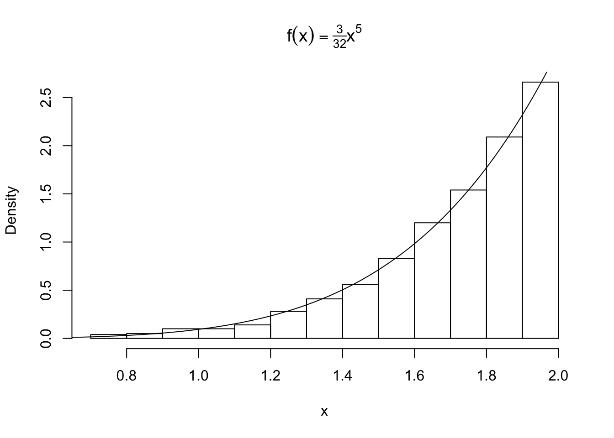
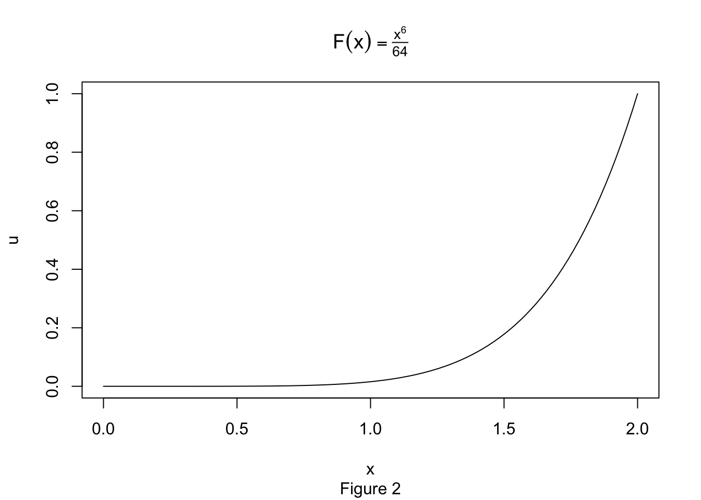

Let’s simulate a random sample from a distribution with density \(f(x) = \frac{3}{32}x^5 \ \ \ 0<x<2\). We find the distribution to be \(F_X(x) = \frac{x^6}{64}\) and its inverse \(x= F^{-1}_X(u) = 2u^{\frac{1}{6}}\) where \(U \sim \text{Uniform}[0,1]\) by the probability integral transform. We can now sample values of x:
n <- 1000
u <- runif(n)
x <- 2*u^(1/6)
hist(x, probability = TRUE, main = expression(f(x)==textstyle(frac(3,32))*x^5))
y <- seq(0, 2, .01)
lines(y, 3/32 * y^5)
How did we get this uniform random variable? There is a method to the madness.
Let’s take a look at our CDF:

Geometrically, we have a smooth mapping that is contracting the the interval \([0,2]\) to the interval \([0,1]\). However, this is not being done evenly. Let’s bin the x-axis into intervals of width \(.25\) and compute the direct image of each bin.
| bin | image | img_length |
|---|---|---|
| [0 , 0.25] | [0 , 0] | 0.000 |
| [0.25 , 0.5] | [0 , 0] | 0.000 |
| [0.5 , 0.75] | [0 , 0.003] | 0.003 |
| [0.75 , 1] | [0.003 , 0.016] | 0.013 |
| [1 , 1.25] | [0.016 , 0.06] | 0.044 |
| [1.25 , 1.5] | [0.06 , 0.178] | 0.118 |
| [1.5 , 1.75] | [0.178 , 0.449] | 0.271 |
| [1.75 , 2] | [0.449 , 1] | 0.551 |
We partition the domain into bins of equal length, which under the image of the CDF, paritions the interval \([0,1]\) into bins of very unequal length. If we then sample uniformly from the interval \([0,1]\) and return each point to its original bin (i.e take the inverse), we will end up with our original distribution
The image length is just the proportion of points sampled uniformly from [0,1] whose inverse falls into the specified bin.
Suppose we are told that a coin is flipped 50 times, 10 of which land heads. We want to simulate a sample of possibles values for the bias of the coin. We can model our belief about the bias as a beta distribution with parameters a = 10 and b = 40 with density \[f(x) = \frac{49!}{9!39!}x^9(1-x)^{39}\]
We will use the uniform distribution as our g(x) since it has the same domain and is easy to sample from. Now we solve for the threshold parameter c which satisfies: \[ \forall x \in [0,1]: \hspace{2mm} \frac{f(x)}{g(x)} = \frac{49!}{9!39!}x^9(1-x)^{39} < c\]. To solve for c, our graph of the density reveals we should choose the mode of the distribution for our choice of x. which has a convenient formula: \[mode = \frac{(a-1)}{(a+b-2)}\]
The mode of the beta distribution is 0.1875 and we calculate that c = 7.159. It follows that a random x from g(x) is accepted if \[\frac{f(x)}{cg(x)} = \frac{\frac{49!}{9!39!}x^9(1-x)^{39}}{7.159} > u\]
for some random uniform u.
n <- 1000 #target sample size
k <- 0 #counter for accepted
j <- 0 #iterations
y <- numeric(n)
acceptance_ratio <- function(x){beta_density(x)/my_c}
while(k < n){
acceptance_threshold <- runif(1)
j <- j + 1
x <- runif(1) #random variate from g
if(acceptance_ratio(x) > acceptance_threshold){
#accept x
k <- k + 1
y[k] <- x
}
}In this simulation, j = 7240 iterations were required to generate a sample of n = 1000 variates, compared to the expected \(cn =\) 7159 iterations. Comparing the empirical and theoretical deciles confirms that our sample fits the beta distribution.
| 10% | 20% | 30% | 40% | 50% | 60% | 70% | 80% | 90% | |
|---|---|---|---|---|---|---|---|---|---|
| Qsim | 0.1324365 | 0.1548029 | 0.1697671 | 0.1827297 | 0.1959144 | 0.2112678 | 0.2277108 | 0.2427553 | 0.2693267 |
| Q | 0.1308707 | 0.1515751 | 0.1675891 | 0.1819719 | 0.1959798 | 0.2105138 | 0.2266215 | 0.2461659 | 0.2744112 |
Let \(X_1 \dots X_n\) be an i.i.d list of random variables such that \(X_j \sim X\). The distribution of their sum \(S = X_1 + \dots + X_n\) is called the n-fold convolution of \(X\) and has distribution \(F^{*(n)}_X\). For exapmle, the chi-squared distribution with degree of freedom \(\nu\) is the \(\nu\)-fold convolution of squared standard normals. Let’s use this fact to simulate a random sample of size \(n\) from a \(\chi^2_{\nu}\) distribution.
library(tidyverse)
n <- 1000
nu <- 6
X <- matrix(rnorm(n*nu), n, nu)^2
y <- rowSums(X)
comp <- data.frame(
theoretical = c(nu, 2*nu),
empirical = c(mean(y), mean(y^2) - (mean(y))^2),
row.names = c("mean", "variance")
)
knitr::kable(comp)| theoretical | empirical | |
|---|---|---|
| mean | 6 | 5.975381 |
| variance | 12 | 11.686107 |
We have accurately generated a chi-squared random sample.
A discrete mixture of random variables has a distribution \[F_X = \sum_{j=1}^n\theta_j F_{X_j}\] where our weights \(\theta_j\) sum to 1 and \(X_1 \dots X_n\) is any sequence of random variables.
Here I will investigate the behavior of a specific mixture of gamma random variables given by \[X_j \sim \text{Gamma}(r,\ \lambda_j = \frac{1}{j})\] \[\theta_j = \frac{2j}{n(n+1)}\] \[1\leq j \leq n\]. Our mixed random variable is \(Y_n\) with distribution \[F_{Y_n} = \sum_{j=1}^n\theta_j F_{X_j}\]
I will simulate from mixtures of different sizes. Notice that in our mixture, the contribution of variables appearing later in the sequence is much higher than that of the previous ones. I hyopthesize that as \(n\) increases, \(F_{Y_n} \rightarrow F_{X_n}\).
library(tidyverse)
N <- 1000 # sample size
n <- 50
r <- 3
gamma_mixture <- function(n = 50, r = 3, N = 1000){
# n is the number of variables we are mixing
# N is the sample size we a generating
index <- 1:n
weights <- index/((n*(n+1))/2)
index_sample <- sample(index, size = N, replace = TRUE, prob = weights)
lambda <- 1/index_sample
mixture_sample <- rgamma(N, shape = r, rate = lambda)
mixture_sample
}
sizes <- c(50, 200, 1000)
sizes %>%
map(function(x) gamma_mixture(n = x)) ->
mixture_list
sizes %>%
map(function(x) rgamma(N, shape = r, rate = 1/x)) ->
gamma_list
df <- tibble(
data = c(mixture_list, gamma_list),
n_size = rep(sizes, times = 2),
distribution = factor(rep(c("mixture", "gamma"), each = 3), levels = c("mixture", "gamma"))
)
library(magrittr)
library(scales)
df %<>% unnest()
ggplot(data = df, aes(x = data)) +
geom_density(position = "stack", aes(color = distribution)) +
scale_x_continuous(breaks = scales::pretty_breaks(n = 3)) +
facet_grid(. ~n_size, scales = "free", labeller = label_bquote(cols = n == .(n_size)))The graphs supports our hypothesis that the similarity between the distributions of \(Y_n\) and \(X_n\) gets stronger as \(n\) increases. You can see the sharp peak of the mixture distribution rapidly flattens out to match the gamma distribution. Note the variance of a gamma random variable \(X_n\) with rate parameter \(\frac{1}{n}\) and shape parameter \(r\) is \[ Var[X_n] = n^2r\]
so the variance increases exponentially with our choice of \(n\), flattening out the graph. In contrast, our gamma mixture takes contributions from all \(X_{1\leq j\leq n}\) so it will have less variance and thus a sharper peak.